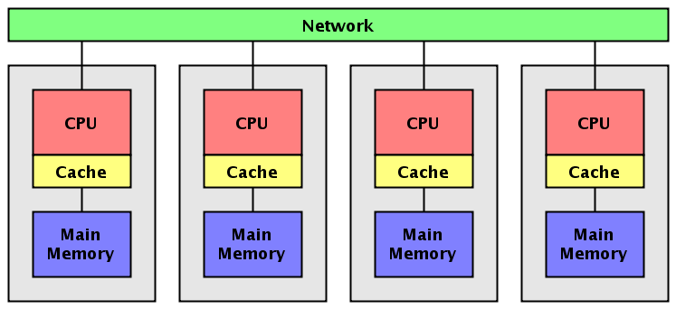

Los sistemas de memoria distribuida o multicomputadores pueden ser
de dos tipos básicos. El primer de ellos consta de un único
computador con múltiples CPUs comunicadas por un bus de datos mientras
que en el segundo se utilizan múltiples computadores, cada uno con su propio
procesador, enlazados por una red de interconexión más o menos rápida.
Sobre los sistemas de multicomputadores de memoria distribuida, se simula
memorias compartidas. Se usan los mecanismos de comunicación y
sincronización de sistemas multiprocesadores.
Un clúster es un tipo de arquitectura paralela distribuida que
consiste de un conjunto de computadores independientes interconectados
operando de forma conjunta como único recurso computacional sin embargo,
cada computador puede utilizarse de forma independiente o separada.
En esta arquitectura, el computador paralelo es esencialmente una colección
de procesadores secuenciales, cada uno con su propia memoria local, que pueden
trabajar conjuntamente.
Cada nodo tiene rápido acceso a su propia memoria y acceso a la memoria de
otros nodos mediante una red de comunicaciones, habitualmente una red de comunicaciones
de alta velocidad.
Los datos son intercambiados entre los nodos como mensajes a través de la red.
Una red de ordenadores, especialmente si disponen de una interconexión de alta
velocidad, puede ser vista como un multicomputador de memoria distribuida y como tal ser
utilizada para resolver problemas mediante computación paralela.
